Page 508
Module 9 — Alarms and Events | Pages 507-530
Lab 18 – Adding Alarm Information to Graphics
AVEVA™ Operations Management Interface 2023
Lab 18 – Adding Alarm Information to
Graphics
Introduction
In this lab, you will add and configure Alarm Border and Visibility animations for various graphic
elements and symbols.
You will add a text box element to the MixingProcess_Detailed symbol and configure it as an alarm
indicator, with alarm border animations and other settings.
You will use the SA_AlarmSeverity symbol from the Situational Awareness Library to create two
symbols, customized for area and non-area objects. Then you will link the symbols to area and
non-area objects.
When testing in the ViewApp preview session, you will observe the notifications for alarms that you
configured in this lab. You will interact with the SA_AlarmSeverity symbol to modify alarm modes
and observe the visual indicators that show for area and non-area objects in the graphics built in
this lab and also in the existing NavtreeControl and NavBreadcrumbControl Apps.
Objectives
Upon completion of this lab, you will be able to:
Add an Alarm Border animation to a graphic element
Enable alarm border Wizard Options for Situational Awareness Library symbols
Configure the SA_AlarmSeverity symbol
Use the SA_AlarmSeverity symbol to change alarm modes
Review alarm adorners in the built-in navigation Apps
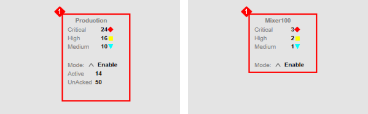
(with "application" tag, "External Content" button)
• MixingProcess_Detailed (selected, highlighted blue)
• Status: "3 of 3 displayed, 1 selected"
• In Tools pane, select Text Box tool
Screenshot: Tools Panel
• Drawing tools (selection, line, rectangle, text, etc.)
• Text Box tool highlighted with tooltip
• On drawing canvas, add text box below AreaName element
Screenshot: Drawing Canvas (grid background)
• Top: Labels "5Mixer" and "Area Name"
• Middle: Blue text box labeled "TextBox1" (selected with blue handles)
• Bottom: Symbol labeled "SA_Pump_Blower_RotaryValve" (pump/blower/rotary valve icon)]
Module 9 – Alarms and Events Visualization
AVEVA™ Training
Create System Malfunction Display with Alarm Border Animation
In the following steps, you will add a text box element to a symbol in the $Mixer template. You will
also add and configure an Alarm Border animation for the text box.
1.
On the Templates tab, in the Training \ Project toolset, double-click $Mixer to open it in the
Object Editor.
2.
In the Content pane, double-click the MixingProcess_Detailed symbol.
The Graphic Editor opens.
3.
In the Tools pane, select the Text Box tool.
4.
On the drawing canvas, add a text box element below the AreaName element.

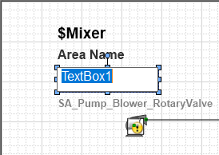
Lab 18 – Adding Alarm Information to Graphics
AVEVA™ Operations Management Interface 2023
5.
On the Properties tab, configure the text box element as follows:
6.
With the AlarmIndicator text box element selected, configure the Text Style \ Alignment
property to Centers.
The text elements at the top of the symbol should look similar to the following:
Graphic \ Name:
AlarmIndicator
Appearance \ ElementStyle:
Alarm_Critical_UNACK
Appearance \ Width:
160
Appearance \ Height:
30
Appearance \ Text:
System Malfunction


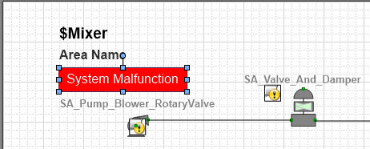
Module 9 – Alarms and Events Visualization
AVEVA™ Training
7.
Double-click AlarmIndicator to display the Edit Animations dialog box, and add an
Alarm Border animation.
8.
In the Object or Field-Attribute Name field, enter Me.Alarm.Condition.
Notice that all alarm urgency references are automatically populated.

Lab 18 – Adding Alarm Information to Graphics
AVEVA™ Operations Management Interface 2023
9.
Add a Visibility animation, and configure the Expression Or Reference (Boolean) as:
Me.Alarm.Condition.InAlarm or not Me.Alarm.Condition.Acked
10. Click OK to close the Edit Animations dialog box.
11. Save and close the MixingProcess_Detailed symbol.
12. Save and close the $Mixer template, and check it in.

Module 9 – Alarms and Events Visualization
AVEVA™ Training
Add Alarm Border Wizards to Other Symbols
In the following steps, you will configure alarm border options and custom properties for the
Level_Detailed symbol.
13. On the Graphics tab, in the Training \ Symbols toolset, open Level_Detailed.
14. Select the SA_Meters1 symbol on the drawing canvas.
15. On the Properties tab, configure the Wizard Options \ SymbolMode property to Advanced.
16. Set the Wizard Options \ AlarmBorder property to True.

Lab 18 – Adding Alarm Information to Graphics
AVEVA™ Operations Management Interface 2023
17. Right-click the symbol on the drawing canvas and select Custom Properties.
The Edit Custom Properties dialog box appears.
18. Select the AlarmMostUrgentShelved custom property, and for Default Value,
change False to:
Me.PV.AlarmMostUrgentShelved
19. Click OK to close the Edit Custom Properties dialog box.
20. Save and close the Level_Detailed symbol, and check it in.

Module 9 – Alarms and Events Visualization
AVEVA™ Training
Customize SA_AlarmSeverity Symbols
In the following steps, you will create and configure two new symbols: one to display alarm
severity information for area objects and the other to display alarm severity information for non-
area objects.
21. On the Graphics tab, in the Training \ Symbols toolset, create a new symbol and name it
AlarmSummary_Area.
22. Double-click AlarmSummary_Area to open it in the Graphic Editor.
23. On the Toolbox tab, enter a search string to find the SA_AlarmSeverity symbol and embed
the symbol on the drawing canvas.


Lab 18 – Adding Alarm Information to Graphics
AVEVA™ Operations Management Interface 2023
24. Ensure the SA_AlarmSeverity1 symbol is selected on the drawing canvas, and on the
Properties tab, configure properties as follows:
25. Click the drawing canvas, and then on the Properties tab, configure the following properties
for the symbol:
26. With the drawing canvas still selected, on the Properties tab, in the Runtime Behavior \
ContentType field, select Alarm Summary.
Wizard Options \ Type:
AlarmPanel
Wizard Options \ LabelType:
ObjectTagname
Wizard Options \ AlarmBorder:
True
Graphic \ Size:
Fixed
Graphic \ FixedWidth:
250
Graphic \ FixedHeight:
250

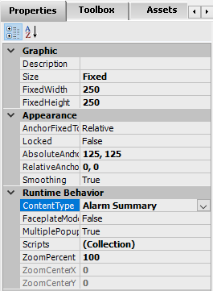
Module 9 – Alarms and Events Visualization
AVEVA™ Training
27. Reposition the symbol in the center of the canvas.
The drawing canvas should look similar to the following:
28. Save and close the AlarmSummary_Area symbol, and check it in.
29. On the Graphics tab, in the Training \ Symbols toolset, duplicate the AlarmSummary_Area
symbol and name the duplicate AlarmSummary_nonArea.

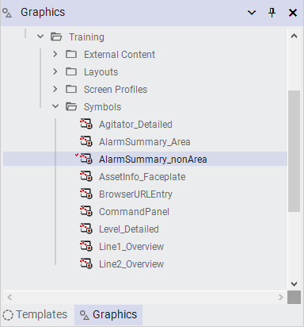
Lab 18 – Adding Alarm Information to Graphics
AVEVA™ Operations Management Interface 2023
30. Double-click AlarmSummary_nonArea to open it in the Graphic Editor.
31. On the drawing canvas, select SA_AlarmSeverity1.
32. On the Properties tab, configure the Wizard Options \ IsAreaObject property to False.
The SA_AlarmSeverity1 symbol changes on the drawing canvas because it is now
configured for a non-area object.
33. Save and close the AlarmSummary_nonArea symbol, and check it in.

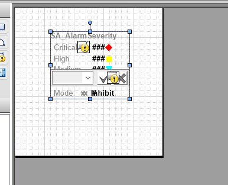
• Right Panel: Name = AlarmSummary (red arrow)
• Description: (empty)
Step 37: Save and close $gArea template and check it in]
Module 9 – Alarms and Events Visualization
AVEVA™ Training
Link Alarm Severity Symbols to Templates
Now, you will link the new alarm severity symbols to templates.
34. On the Templates tab, in the Training \ Global toolset, double-click $gArea to open it in the
Object Editor.
35. On the Attributes tab, in the Content pane, link the AlarmSummary_Area symbol to the
template.
36. In the Name field, change the symbol name to AlarmSummary.
37. Save and close the $gArea template, and check it in.
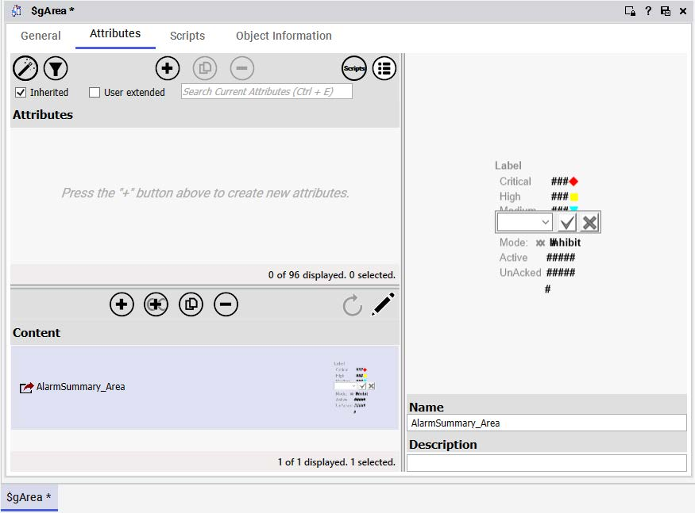

(selected, purple highlight)
• Asset_Layout (grid icon)
• EquipmentList [MixerEquipmentList] (labeled "application", "External Content")
• Right Configuration Panel:
• Label Section: Critical (red triangle), High (yellow triangle), Medium (green checkmark)
• Mode Setting: Mode: Inhibit (checked)
• Properties: Name = AlarmSummary (red arrow), Description: (empty)
• Bottom Status: $Mixer * (unsaved changes)
Steps 41-43: $HeatExchanger Template
• Open $HeatExchanger from Templates tab > Training \ Project toolset
• Link AlarmSummary_nonArea symbol
• Rename to AlarmSummary
• Save, close, check in
Screenshot: $HeatExchanger Template Editor
• Header: "1 of 102 displayed. 1 selected."
• Top toolbar: Same as above
• Left Content Panel:
• AlarmSummary [AlarmSummary_nonArea] (selected, purple highlight)
• Right Configuration Panel:
• Label Section: Same severity labels
• Mode Setting: Mode: Inhibit (checked)
• Properties: Name = AlarmSummary (red arrow), Description: (empty)
• Bottom Status: $HeatExchanger * (unsaved changes)]
Lab 18 – Adding Alarm Information to Graphics
AVEVA™ Operations Management Interface 2023
38. On the Templates tab, in the Training \ Project toolset, open $Mixer and link the
AlarmSummary_nonArea symbol to the template.
39. In the Name field, change the symbol name to AlarmSummary.
40. Save and close the $Mixer template, and check it in.
41. In the Training \ Project toolset, open $HeatExchanger and link the
AlarmSummary_nonArea symbol to the template.
42. In the Name field, change the symbol name to AlarmSummary.
43. Save and close the $HeatExchanger template, and check it in.
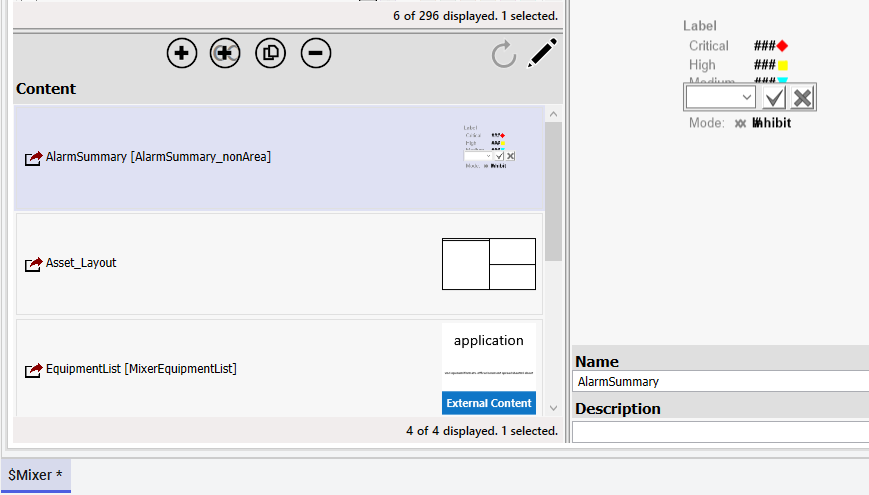

Module 9 – Alarms and Events Visualization
AVEVA™ Training
Update the Main Layout
44. On the Graphics tab, in the Training \ Layouts toolset, double-click Main to open it in the
Layout Editor.
45. With Pane1 selected, add a new pane at the bottom.
A new pane named Pane7 is added below Pane1.
46. Select Pane7, and on the Properties tab, configure properties as follows:
General \ Content Type(s):
Alarm Summary
Size \ Height:
300
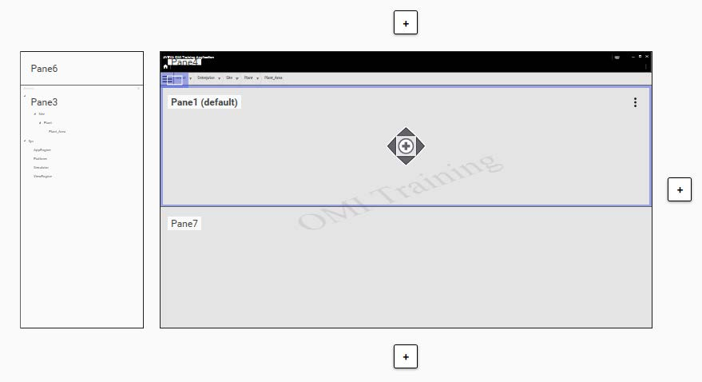

Lab 18 – Adding Alarm Information to Graphics
AVEVA™ Operations Management Interface 2023
47. Select the divider between Pane1 and Pane7, but do not move the divider.
Divider properties appear on the Properties tab.
48. On the Properties tab, check the General \ Is Interactive property.
49. Save and close the Main layout, and check it in.
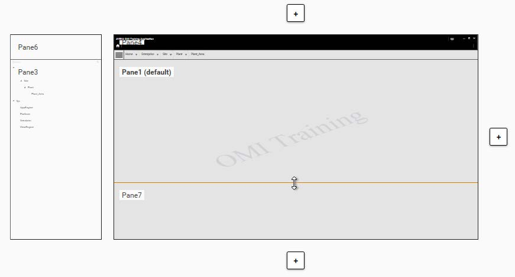
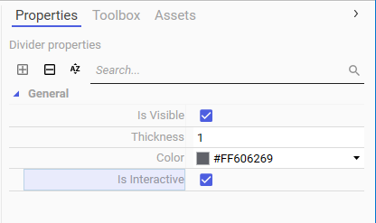
Module 9 – Alarms and Events Visualization
AVEVA™ Training
Test the ViewApp in a Preview Session
Now you will test the changes in the ViewApp preview session to verify that the graphics
configured with alarm border animations indicate alarm information at runtime.
50. Switch to the ViewApp preview session, and ensure you are navigated to Mixer100.
Notice that

Lab 18 – Adding Alarm Information to Graphics
AVEVA™ Operations Management Interface 2023
In the Mixer100 display in the top-left pane, notice the System Malfunction label has an
alarm border, and Level_001 displays with an alarm border as well.
In the bottom pane, notice the Mixer100.AlarmSummary symbol configured for a non-area
object also displays with an alarm border.
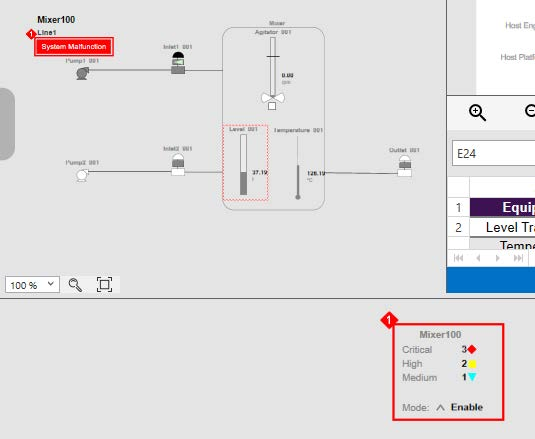

Module 9 – Alarms and Events Visualization
AVEVA™ Training
51. Navigate to Line1.
In the bottom pane, notice the Line1.AlarmSummary symbol configured for an area object
displays with an alarm border.
52. Navigate to Production Lines.
53. In the Production.AlarmSummary symbol in the bottom pane, click the up-arrow to the right
of the Mode label.
A command panel appears.

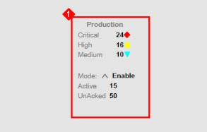
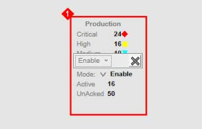
Lab 18 – Adding Alarm Information to Graphics
AVEVA™ Operations Management Interface 2023
54. In the command panel, click the down-arrow next to Enable to display a drop-down list of
alarm modes, and then select Inhibit from the drop-down list.
Some of the text in the drop-down list overlaps. This is because the combo box in the
SA symbol uses the HMI Element, Label style that sets the background to transparent.
Although not done in this lab, it is possible to edit the Label style in the Galaxy Styles
configuration to change the transparency of the Label style.
The command panel shows Inhibit with an empty check box on the left.
55. Check the check box to the left of Inhibit.
Notice that an Apply button appears to the right of Inhibit.

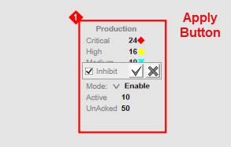
Module 9 – Alarms and Events Visualization
AVEVA™ Training
56. Click the Apply button.
The Mode for Production.AlarmSummary changes to Inhibit.
57. At the top-left of the ViewApp preview, in the NavBreadcrumbControl, notice the Plant node
shows the alarm adorner, but the Production Lines node does not.
The alarm aggregation totals shown in the Plant node do not include alarms from Production
Lines. The Production Lines have been inhibited.
58. Navigate to Line1.
Notice that the Mode for Line1.AlarmSummary displays as Disable.

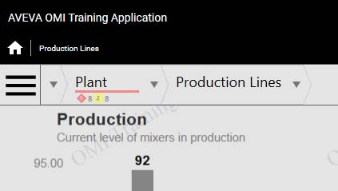
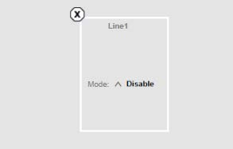
Lab 18 – Adding Alarm Information to Graphics
AVEVA™ Operations Management Interface 2023
59. Navigate to Mixer100.
In the Mixer100 display, notice that the alarm indicator for Level_001 changes to indicate it is
disabled.
Also notice that the System Malfunction label is disabled, because the alarms of the source
attribute Alarm.Condition have been disabled and there is no alarm active for that attribute.
Additionally, notice the NavBreadcrumbControl shows the Inhibit mode has affected all the
sub-areas and automation objects below Production Lines.

Module 9 – Alarms and Events Visualization
AVEVA™ Training
60. Navigate to Line2 and view the display.
Notice that the Mode for Line2.AlarmSummary displays as Disable.
61. Navigate back to Production Lines.
62. In the Production.AlarmSummary symbol, click the up-arrow to the right of Mode to display
the command panel.
63. In the command panel, uncheck Inhibit and click Apply.
Notice that Mode for Production.AlarmSummary is set to Enable.

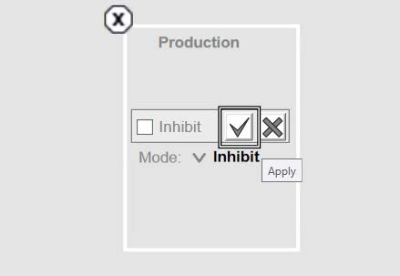
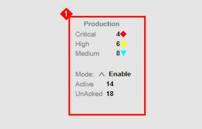
Lab 18 – Adding Alarm Information to Graphics
AVEVA™ Operations Management Interface 2023
64. Navigate to the following to verify that Mode is changed to Enable:
Line1
Mixer100
Line2
The following example shows Mode for Line2.AlarmSummary as Enable.
65. Navigate back to Production Lines.
66. In Production.AlarmSummary, display the command panel and change the Mode to
Disable.
67. Navigate to Mixer100 and verify that all the nodes in the NavBreadcrumbControl from
Production Lines to Mixer100 are disabled.
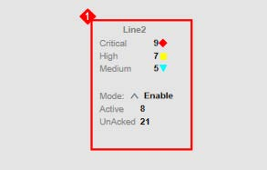
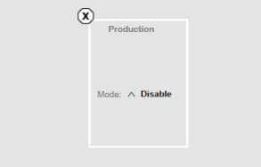
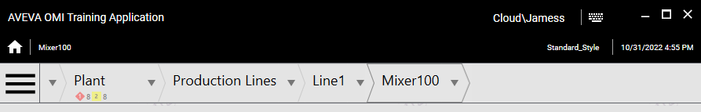
Module 9 – Alarms and Events Visualization
AVEVA™ Training
68. Navigate back to Production Lines.
69. In Production.AlarmSummary, display the command panel and change the Mode to
Silence.
70. Navigate to the following and observe the changes to the AlarmPanel.
Line1
Mixer100
71. When you are finished testing alarm modes, navigate back to Production Lines and change
Mode for Production.AlarmSummary to Enable.
Be sure to change Mode for Production.AlarmSummary to Enable so you will be
able to see alarm activity in later labs.
72. Minimize the preview session.
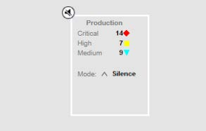
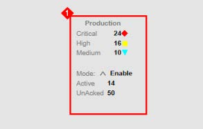
Review above.